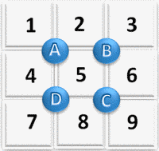
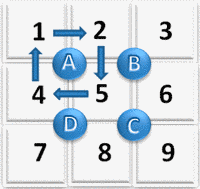
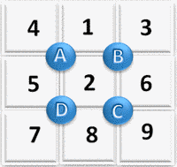
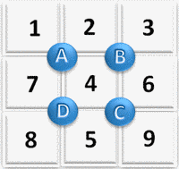
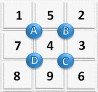
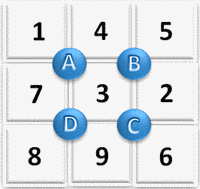
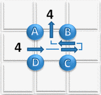

Castor a reçu un nouveau jeu, constitué de cases numérotées de 1 à 9 et de quatre boutons (A, B, C et D). Lorsque Castor appuie sur un bouton, les nombres situés autour de ce bouton tournent dans le sens des aiguilles d'une montre. Par exemple, en partant de l'image ci-dessous à gauche et en appuyant sur le bouton A, les nombres tournent comme indiqué par les flèches, et on obtient la situation représentée ci-dessous à droite.
|  |  |  |
Castor est parti de l'image de gauche, puis a appuyé dans l'ordre sur les boutons D, C, B et B. Où se trouve alors le nombre 4 ? Cliquez sur la case correspondante ci-dessous.
La mauvaise façon de résoudre ce sujet consiste à recopier la grille en entier à chaque fois.
| 1) Après appui sur le bouton D | 2) Après appui sur le bouton C | ||
|  |
| 3) Après appui sur le bouton B | 4) Après appui sur le bouton B | ||
|  |  |
La bonne façon de résoudre ce sujet consiste à uniquement suivre la trajectoire du 4.
